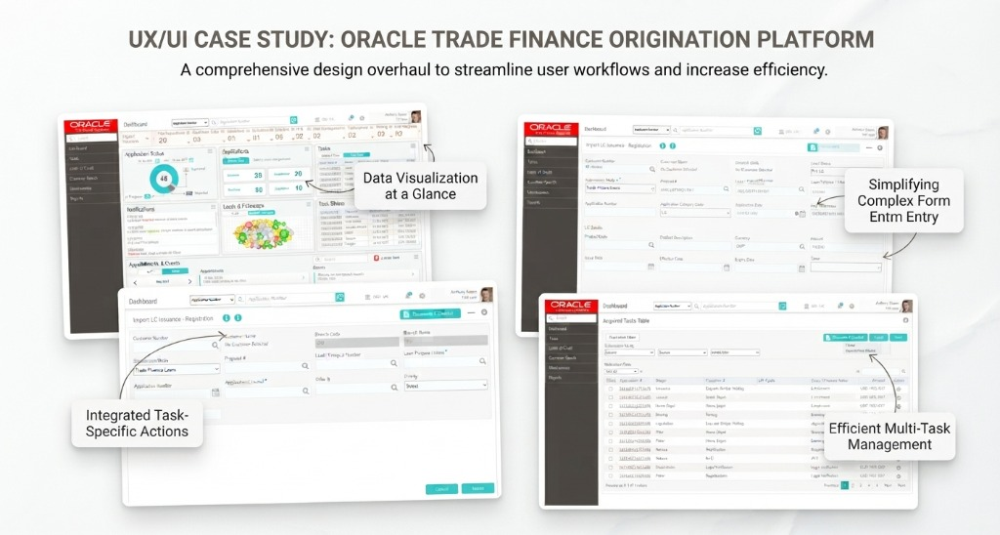
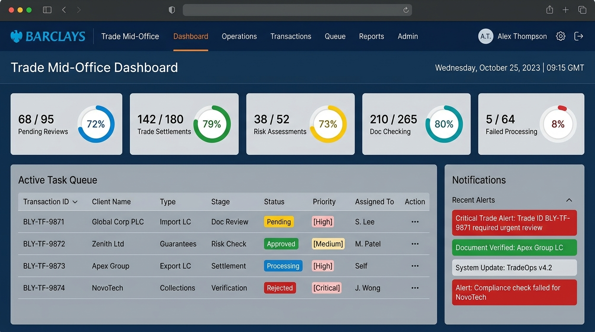
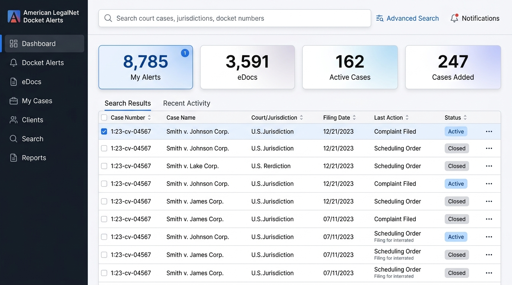
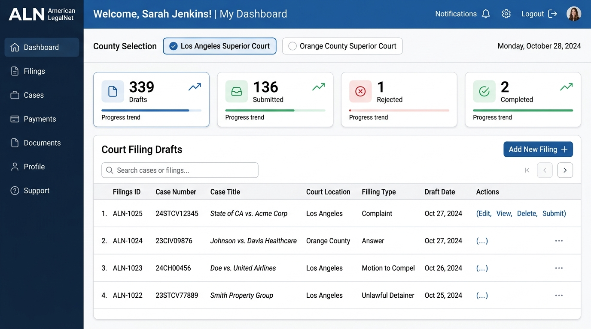
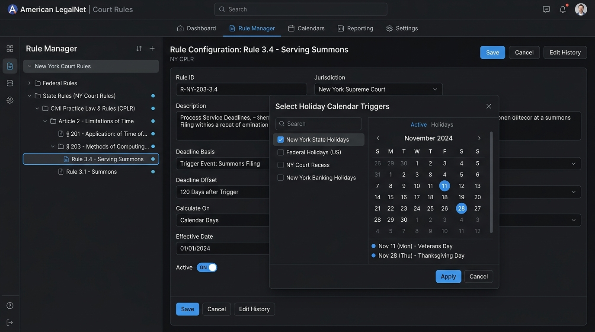
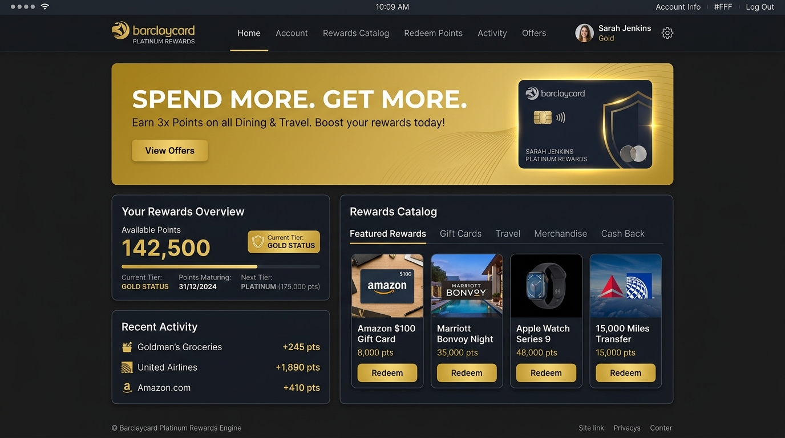
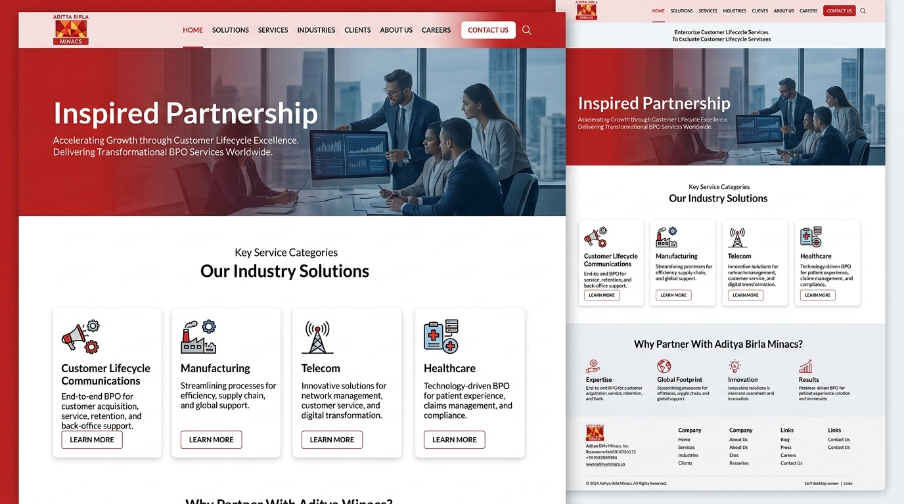

Results-driven UX Team Leader with over 18 years of experience spearheading the design of high-performance digital products for enterprise B2B, financial, and legal sectors. Expert in scaling design operations, establishing robust design systems, and translating complex business logic into intuitive user experiences aligned with executive business goals and global accessibility (WCAG 2.1) standards.
I'm a UX Team Leader with over 18 years of experience spearheading digital product design across demanding enterprise sectors: core banking (Oracle Financial Services Software), legal workflow automation (American LegalNet / Aderant), and large-scale digital publishing platforms (MPS Limited). Across every domain, my focus is on transforming data-dense, rule-heavy environments into clean, resilient, and intuitive interfaces.
My role consistently sits at the nexus of strategic vision and hands-on execution: scaling design operations, mentoring multidisciplinary teams in Agile environments, establishing cohesive design systems, and conducting stakeholder workshops to align product direction with executive roadmaps.
I place particular emphasis on measurable outcomes and accessibility—ensuring products strictly meet WCAG 2.1 benchmarks, reduce cognitive friction for end users, and eliminate handoff barriers between design and engineering.
Mentoring and training design teams, driving UX strategy, managing Agile sprints, and aligning cross-functional stakeholders.
Establishing design system governance, visual hierarchy, typography standards, and reusable component libraries at scale.
Simplifying complex business logic, user journey mapping, information architecture, and ensuring rigorous accessibility compliance.
Partnering directly with Product Managers and Engineering Leads to ensure pixel-perfect fidelity and smooth release delivery.
Over 18 years of driving UX strategy, design operations, and product design across global enterprise technology organizations.
Highlights of design leadership and architectural problem solving across core banking, legal enterprise, and large-scale platforms.
Oracle FLEXCUBE powers loan origination and core banking operations across Tier-1 financial institutions worldwide. Operators faced high-density, multi-parameter screens where data entry and complex financial calculation logic overlapped. The core challenge was modernizing the UX and loan origination flow while overcoming strict bandwidth constraints and ensuring seamless rendering across global multi-platform deployments.
Audited legacy banking screens and CSS architecture to identify rendering bottlenecks and navigation friction points in origination flows.
Engineered a dynamic UI creation tool that decoupled data configuration from front-end rendering logic.
Created reusable UI patterns, validation states, and data entry layouts optimized for low bandwidth.
Led regular sprint checks and cross-functional alignment sessions to deploy optimizations across global banking modules.
Billing administrators, finance teams, and attorneys at top-tier US law firms needed streamlined tools to reconcile billing entries, manage complex legal workflows, and review invoices against client compliance rules. Legacy interfaces suffered from high cognitive load, fragmented views, and technical handoff friction between design and engineering teams.
Conducted workflow evaluations to map how attorneys and finance admins navigate billing review and compliance checks.
Restructured task queues around risk flags and validation checkpoints to surface line-item discrepancies early.
Created interactive prototypes in Figma/XD to validate intuitive interaction models with legal domain experts.
Delivered pixel-perfect technical specs and unified brand guidelines for seamless engineering implementation.
Managing UX across large-scale enterprise digital product developments required establishing a scalable, governed design system that bridged the gap between product management, design, and engineering while strictly adhering to global WCAG 2.1 accessibility standards.
Defined WCAG 2.1 compliance criteria and usability benchmarks across all platform touchpoints.
Architected shared component libraries, tokens, and interaction guidelines for the design team.
Mentored designers, established critique rituals, and aligned sprint deliverables with product goals.
Facilitated high-fidelity prototype reviews with Product Managers and Engineering Leads.
High-fidelity user interface screens and system architectures designed for enterprise banking, legal tech, and digital platforms.

Designed end-to-end core banking UI modules, collateral perfection workflows, loan origination forms, and runtime UI creation engine for Tier-1 global financial institutions.

Designed enterprise trade finance dashboards, application tracking queues, credit limit checks, and data enrichment workflows for international banking operations.

Created litigation alert tracking interfaces, party watch dashboards, multi-jurisdiction search, and eDoc notification systems for top-tier US law firm attorneys.

Engineered end-to-end court filing wizard flows, party role definitions, fee calculation, and document attachment portals across California court jurisdictions.

Designed hierarchical rule set trees, event trigger configurators, and holiday calendar integration interfaces to automate legal deadline management.

Crafted high-impact promotional landing pages, point calculation tools, and loyalty reward redemption portals for Barclaycard credit card members.

Designed enterprise brand sites, BPO customer lifecycle portals, ITIL telecom infrastructure dashboards, and corporate web identity systems.
A comprehensive breakdown of strategic leadership, UX methodologies, design systems, and technical standards.
Formal education and specialized design training foundations.
Open to UX Team Leader, Design Lead, and Principal UX opportunities in enterprise digital products, fintech, and design systems.